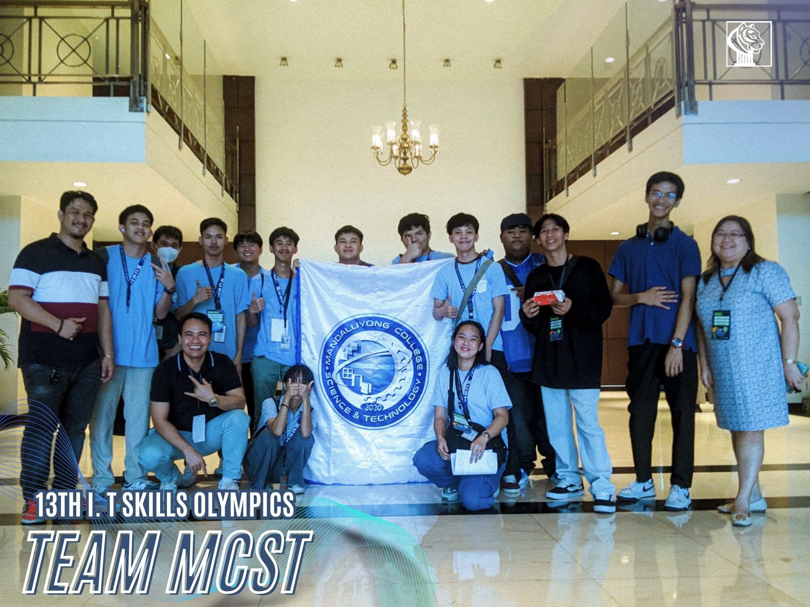

AgoraMind
Marketplace of Ideas
Marketplace of Ideas
For me, being a lifelong learner means never settling for what I already know. It’s about curiosity, adaptability, and the excitement of discovering something new every day. Whether it’s mastering a new programming language, framework, software, tool or understanding how things work, I see learning as a lifelong adventure — not a chore.
I believe knowledge grows best when it’s shared, applied, and continuously refined. I approach learning with an open mind, ready to explore topics outside my comfort zone. I don’t aim for perfection — I aim for progress.
I was entrusted with the responsibility of developing our college website from scratch. After deploying it successfully, I have been actively maintaining and improving it to ensure smooth operation and up-to-date information.
I attended a hands-on workshop together with Prof. Niño Narido and Mr. Alex Camangeg at the National Library of the Philippines focused on the Koha library system. We installed Ubuntu Server, set up Koha, and configured it. I currently maintain both the server and the library system for our institution.
I represented Mandaluyong College of Science and Technology at the IT Olympics held in University of Makati, participating in the Java Programming category. This competition tested not only my coding abilities but also my problem-solving skills under time pressure.
The world is changing faster than ever, and the ability to learn quickly is my greatest asset. As I work toward becoming a Data Engineer or Full-Stack Developer, I know my growth will depend not only on my skills but on my willingness to keep learning.
For me, learning is not a phase — it’s a lifelong habit. And every day is a new chapter.